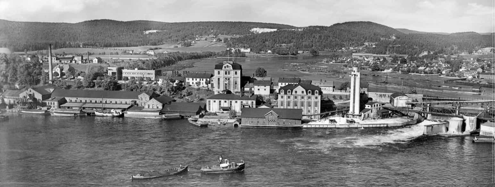
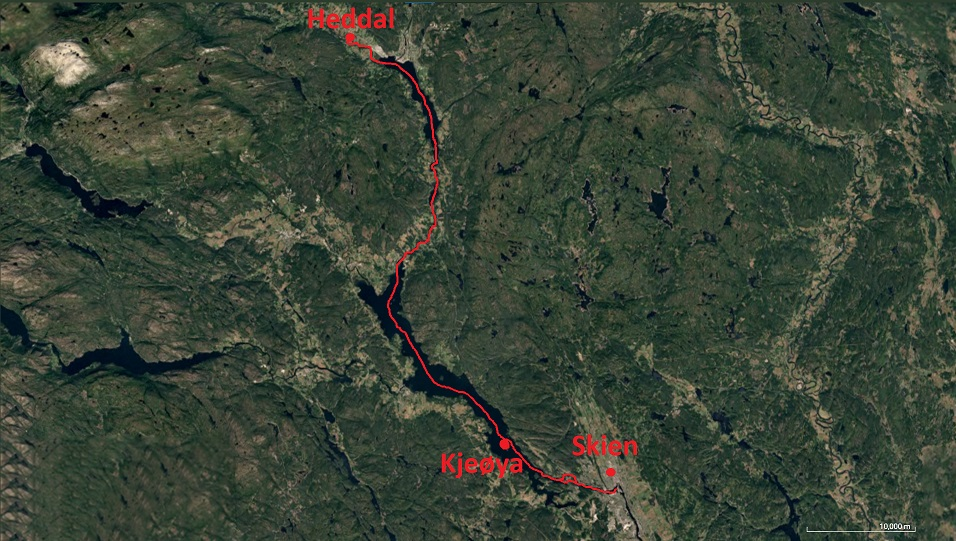
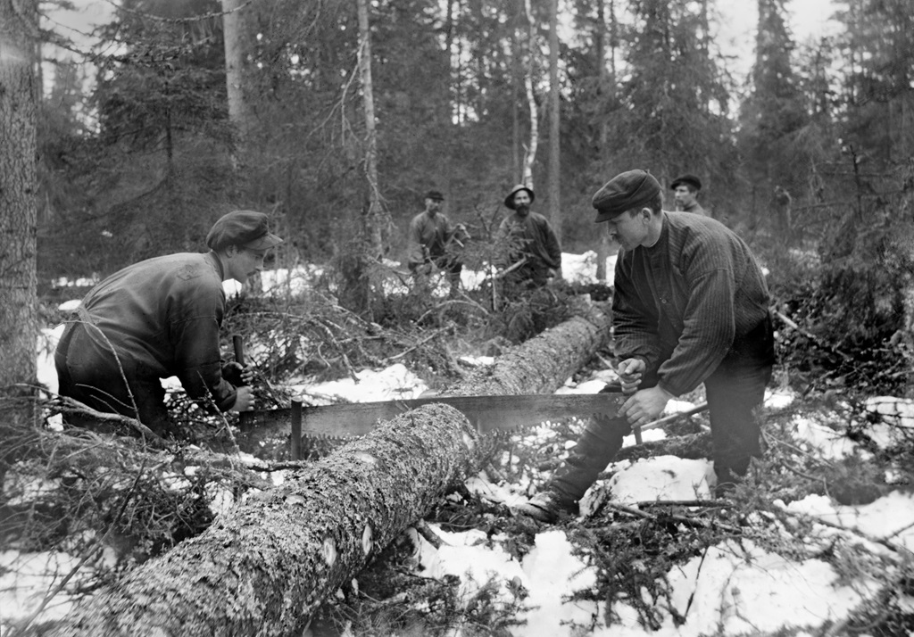

Tømmerdrift

Tømmerdrift i Skien

Union Co. var en norsk treforedlingsbedrift grunnlagt av Benjamin Sewell i 1873 i Skien, ved Damfoss i
Skienselva. Benjamin Sewell var en norsk-britisk sivilingeniør. Union eide en papirfabrikk, og
spesialiserte
seg opprinnelig som tresliperi. De etablerte også en sulfittcellulosefabrikk. Fra 1890 ble bedriften den
ledende innen norsk treforedling. I lange periode eide de også helt eller delvis flere andre norske
treforedlingsfabrikker, samt kraftverk i Skiens- og Drammensvassdraget.
Hvordan ble tømmeret fraktet og hvordan ble det håndtert?
Tømmerfløting innebærer transport av tømmer nedover vassdrag og/eller over sjøer. Tømmeret ble enten fløtet
som løs-tømmer (enkeltstokker) og det er ofte det som forbindes med fløting, men det ble også tatt i bruk
tømmer-flåter. Selve fløteryrket var farefullt hvor mange mistet livet opp gjennom årene.
Tømmeret ble brakt til Norsjø ved hjelp av bekker og elver ved enkeltmanns fløting. Mellom Bakken og Faret ble
tømmeret samlet ved "Kronteksten", der det var mulig å få solgt det. Der "Kronteksten" tidligere lå, ligger nå
kulturminnesmerket "Hakastein kulturminnepark". Før Skien-Norsjøkanalen og Telemarkskanalen ble bygd i 1861 og
1892, kunne det ta tre år for tømmeret å fløte fra Notodden til sagene i Skien. Derfor ble store deler av
vassdraget regulert for å gjøre arbeidet lettere.
Flere fjell ble sprengt og dammer ble bygd. I vassdraget ble tømmeret fløta i krokete og smale elver og
fosser. Opp til en tredel av tømmeret kunne bli ødelagt underveis. Den aller første tømmerstokken ble fraktet
gjennom Skiensvassdraget for mer enn 1000 år siden. I Norsjø ble tømmeret (hovedsakelig bjørk) samlet i flåter
og ført til Kjeøya sør i Norsjø ved hjelp av vær og vind, i tillegg til å noen ganger bruke seil. Selve
fløtingen var mest sannsynlig i gang allerede på 800-tallet. I 1578 ble det bygget en dam i Skottfossen for å
lette arbeidet med tømmeret. Dammen ble bygd fordi Skottfossen har alltid bydd på store problemer og ødelagt
mye av tømmeret, hvor opptil en tredel kunne bli ødelagt. Senere ble også to sager bygd ved fossen.

Sent på 1970-åra ble det seilt tømmer-flåter fra Heddal ved Notodden til Skottfossen ved Løveid med mast
og
råseil. Selve tømmeret ble hogd langs elvene slik at det lettere kunne fraktes videre. Sagene som
bearbeidet
tømmeret lå i Skien, hvor det ble laget papir av det på Union Co. Når tømmeret kom til Skien, ble det
hogget
både til eget bruk og for salg til andre. Prosessen ble enda mer effektiv når jernøksa ble tatt i bruk.
Ved
hjelp av jernøksa kunne folk nå bygge større hus, drive gårder og bygge båter som var bedre egnet
hardere
tilstander til havs, istedenfor båter som kun var tilpasset tømmerfløtingen.
Hvordan utviklet tømmerdriften seg i Skien?

Ved hjelp av tømmerfløtingen vokste Skien fram som en handelsby. Utviklingen av sagbruks- og
treforedlingsindustriene skapte større etterspørsel etter tømmer. I perioder var prisene høye og det
førte til
at de store skogeierne fikk en forbedret livsstil og enda bedre råd.
Skuter kom fra blant annet Tyskland, Nederland og Danmark for å hente trelast. Borgere i Skien eide
mange skip
som ble brukt til tømmereksport. Allerede på 1500-tallet hadde byen omkring 80 fartøyer som ble brukt
til
tømmereksport. Tømmeret ble lastet på skip og seilt ut av Skien, Stathelle og Langesund.
Skiensvassdraget var
nummer to i landet når det gjaldt eksport av tømmer. Dette skjedde etter at sagbrukene vokste fram på
midten
av 1500-tallet, noe som økte tømmerfløtingen på vassdraget kraftig. I 1845 ble den første sirkelsaga
tatt i
bruk i Skien.
De gamle oppgangssagene ble etter hvert byttet ut med de nye, mer effektive sirkelsagene. De
gamle sagene hadde blader med grove tenner som førte til et stort svinn, og ga få bord per stokk. I siste del
av 1800-tallet kom dampsagene i Vauvertsagen i Skien som ble drevet av dampmaskiner og overtok for de gamle
sagmøllene. Dette var med på å forandre næringslivet. Det siste tømmerlasset ble fløtet til Union i Skien i
januar 2006 og var slutten på tømmerfløtingen i Norge. Fra 1932 kom tømmertransport med bil i konkurranse med
fløtingen av tømmeret. I starten ble bilene brukt til å kjøre tømmeret fra skogene til nærmeste store
vassdrag, der båter tok over. En del av tømmeret ble også kjørt direkte fra skogene og til bedriftene som
skulle bruke tømmeret. Dette gjaldt spesielt tømmer fra Heddalsvassdraget. Biler ble tatt mer og mer i bruk,
helt til den overtok fullstendig for fløtingen. Selskap tjente også godt på tømmerdriften. Selskapet Skien
Cellulosefabrikk som ble etablert i 1880, bygde landets første sulfittcellulosefabrikk og la grunnlaget for
veksten i Union Co. som senere ble kjøpt opp av dem. Anlegget var dampdrevet og ble lokalisert på Vadrette
fordi de trengte reint driftsvann. Den nye bedriften viste se gå være mer effektiv og lønnsom. De eksporterte
til papirfabrikker i mange land, og hadde det økonomisk sett godt i flere år. Til tross for det endte Union Co
å avvikle bedriften i 1917.
I 1845 ble den første sirkelsaga tatt i bruk i Skien. De
gamle oppgangssagene ble etter hvert byttet ut med de nye sirkelsagene. De gamle sagene hadde blader med grove
tenner som førte til et stort svinn, og ga få bord per stokk. I siste del av 1800-tallet kom dampsagene i
Vauvertsagen i Skien som ble drevet av dampmaskiner og overtok de gamle sagmøllene. Dette var med på å
forandre
næringslivet. Det siste tømmerlasset ble fløtet il Union i Skien i januar 2006 og var slutten på
tømmerfløtingen
i Norge. Fra 1932 kom tømmertransport med bil i konkurranse med fløtingen av tømmeret. I starten ble bilene
brukt til å kjøre tømmeret fra skogene til nærmeste store vassdrag, der båter tok over. En del av tømmeret ble
også kjørt direkte fra skogene og til bedriftene som skulle bruke tømmeret. Dette gjaldt spesielt tømmer fra
Heddalsvassdraget. Bilen ble mer og mer brukt helt til den byttet fløtingen helt ut.
Hvordan er tømmerbedriften i dag?
Den 4. oktober 2005 vedtok bedriftsforsamlingen i Norske Skog å legge ned Union. Den siste papirmaskinen ble
stoppet 1. mars 2006, som markerte slutten på 133 år med papirindustri i Skien.
10 år etter Union ble lagt ned hadde det begynt å etablere seg bedrifter på øya der industritomta stod. Det
har kommet mange ulike bedrifter på Klosterøya etter at Union ble lagt ned. Teater Ibsen har flyttet inn i de
gamle fabrikkhallene, Eventyrfabrikken (Funplays Skien) i det gamle renseriet og treningssenteret Stamina
(SATS) i ett av de nyere byggene. NHO Telemark, Innovasjon Norge og flere IT-bedrifter har også bestemt seg
for å plassere seg i området. I tillegg til disse bedriftene, ble også Skien Videregående Skole bygget og stod
skoleklar i 2018, som var etter planen som var satt.
De som jobbet i Unions anlegget var ikke fornøyde med at bedriften skulle bli lagt ned. De gitt ut i kamp om å
prøve å berge arbeidsplassene sine. De hadde bedriftsforsamlingsmøter som ble brukt til demonstrasjoner for å
overbevise ledelsen til å angre på valget. Året 2005 så var det et valg, og mange politikere både lokalt og
nasjonalt ble med på kampen for å beholde Union.